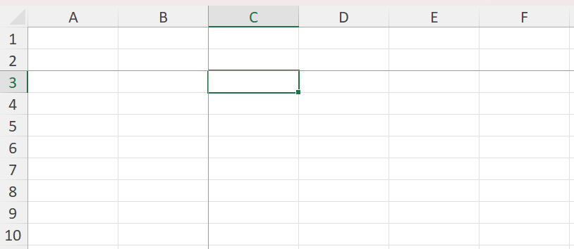
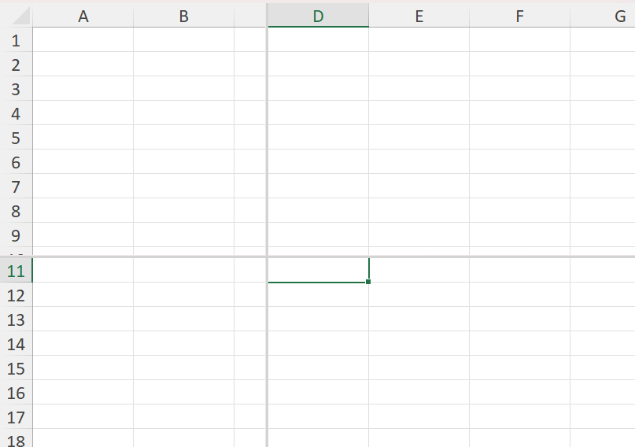

Freeze and split panes
Worksheets may have one or more of their rows and/or columns frozen so they stay visible while scrolling, or split into independently scrollable panes. XLSX.jl provides functions to freeze, split, or remove panes from a worksheet's view.
Freeze Panes
Freeze one or more rows (eg header rows) so that they will not scroll vertically with rows beneath and/or one or more columns (eg row labels) so they don't scroll sideways using freezePanes(). Frozen rows/columns remain fixed as the main pane scrolls freely.
julia> using XLSX
julia> f = XLSX.newxlsx()
XLSXFile("C:\...\blank.xlsx") containing 1 Worksheet
sheetname size range
-------------------------------------------------
Sheet1 1x1 A1:A1
julia> sheet = f[1]
1×1 XLSX.Worksheet: ["Sheet1"](A1:A1)
julia> XLSX.freezePanes(sheet) # freezes the first row (the default: nrows=1, ncols=0)
julia> XLSX.freezePanes(sheet; nrows=2, ncols=1) # freezes the first 2 rows and column A
julia> XLSX.freezePanes(sheet, "C3") # equivalent to nrows=2, ncols=2 (see image below)nrows/ncols and anchor_cell are two ways of specifying the same boundary: anchor_cell is the first cell of the scrolling region, so freezePanes(s, "C3") freezes everything above and to the left of C3.
Frozen panes have no effect in XLSX.jl but can be set using freezePanes() so that the panes are frozen when a saved file is opened in Excel.

Calling freezePanes again replaces any panes already set with the newly specified panes.
Split Panes
Split a worksheet into two or four panes that are separately and independently scrollable using splitPanes(). Unlike frozen panes, a split pane's divider can be dragged interactively by the user in Excel.
julia> XLSX.splitPanes(sheet; nrows=10) # splits the view below row 10, with a draggable divider
julia> XLSX.splitPanes(sheet, "D11") # Creates 4 scollable panes
Split panes have no effect in XLSX.jl but can be set using splitPanes() so that the panes are split when a saved file is opened in Excel.
The divider position is computed from actual column widths and row heights (falling back to worksheet and Excel defaults where none are set), so it lands close to the requested row/column boundary but isn't guaranteed to be pixel-exact for every font.
SplitFreeze panes
The splitFreeze() function freezes panes just like freezePanes(), but marks them internally as having originated from a split (state="frozenSplit"), matching what Excel itself writes when a user freezes panes already created with a draggable split. For a freshly created pane the visible result is the same as freezePanes; the distinction only affects how Excel behaves if the pane is later unfrozen interactively.
julia> XLSX.splitFreeze(sheet; nrows=3, ncols=2)Remove panes
julia> XLSX.removePanes(sheet)Removes any frozen or split panes, restoring a plain single-pane view.